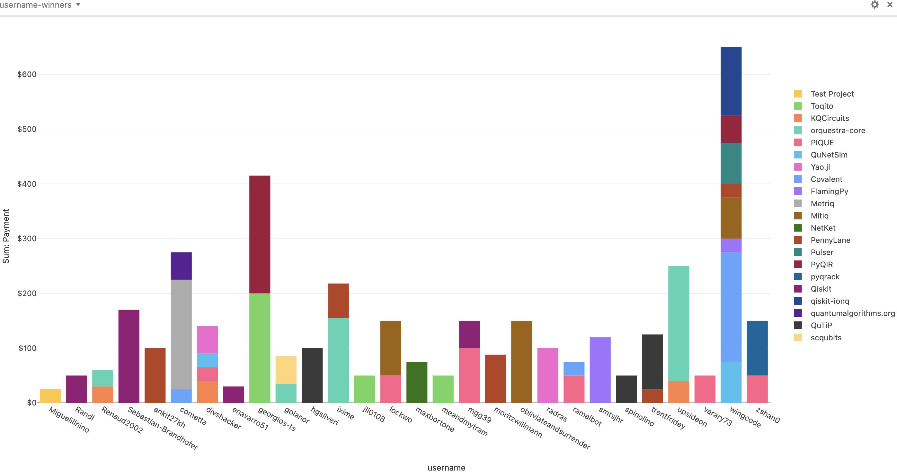
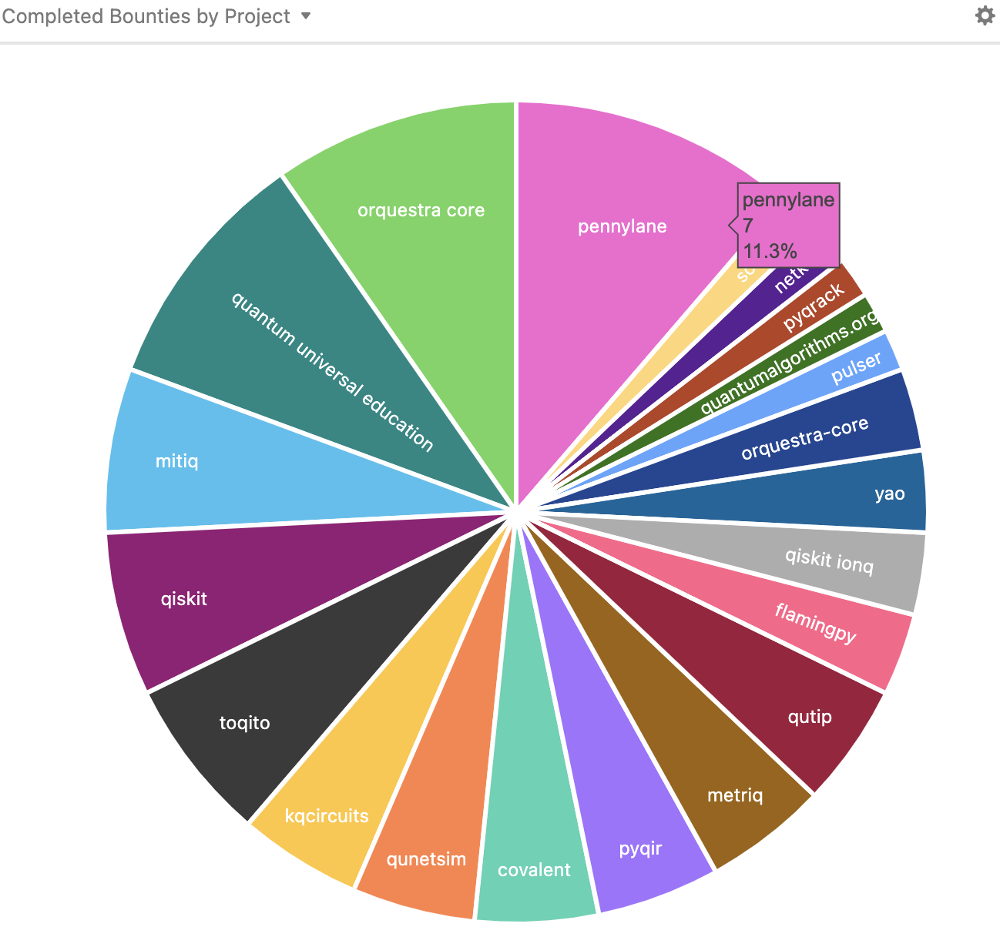
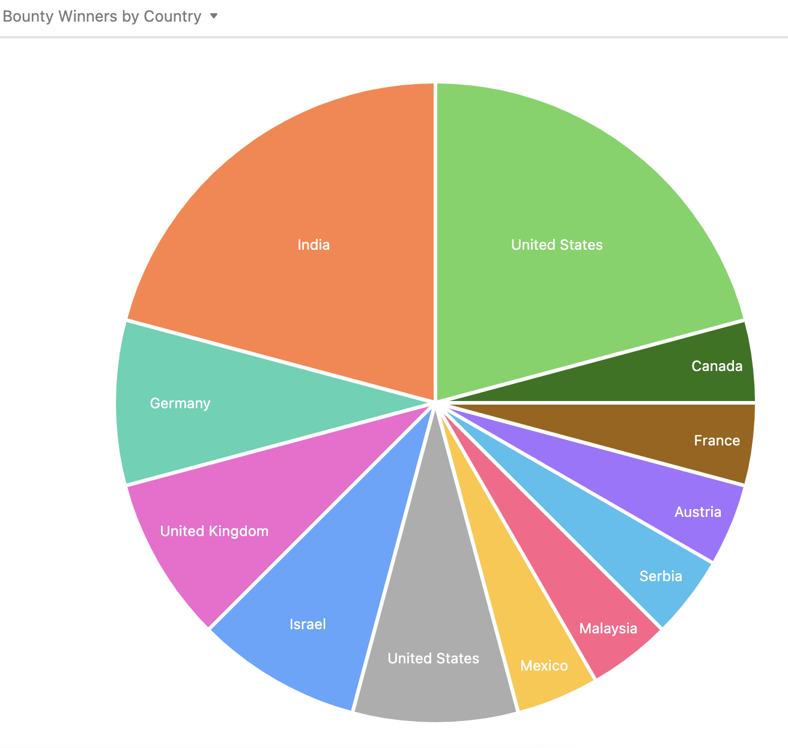

Because evolution is unitary.
Wrapping up unitaryHACK 2022!
Nathan Shammah
Whether you were a participant, maintainer, bounty hacker, or community member: Thank you for participating in unitaryHACK 2022! It was a blast 💛🌴. We give a short summary of the event below.
## Community voices
It’s been great to host a kick-off party on Twitch, hosted by Misty Wahl, from the Unitary Fund technical staff and a Mitiq maintainer [Video], together with other project maintainers and community leaders, including:
Catalina Albornoz, from Xanadu’s Pennylane > [Video]
Luciano Bello, from IBM’s Qiskit > [Video]
Filippo Vincentini, postdoc at EPFL and maintainer of NetKet > [Video]
For Alberto Maldonado, maintainer from the Quantum Universal Education project,
"UnitaryHack is an event where you can demonstrate your skills and abilities, while helping and make an impression on the quantum community."
Maria Gragera Garces, first-time contributor to the Quantum Universal Education project with a bounty and also to Qiskit, said that
“UnitaryHACK was a great place to learn and network with members in the quantum community. It was an amazing experience for me! And helped me push some of my first contributions into the quantum open source ecosystem! Thank you unitaryHACK ❤️”
Gregory Varghese, aka @WingCode, the participant with most hacks: 8 bounties completed. In the wrap-up party on Unitary Fund’s Discord, all the three of them were featured in the community call, together with maintainers from PyQIR, QuTiP, Qiskit, Mitiq, Qrack, Toqito and many participants.
Janne Kotilahti, maintainer of KQCircuits at IQM, said that “it was great to get the first non-IQM contributions to KQCircuits. Looking forward to next year's unitaryhack!”
For Luciano Bello, maintainer of Qiskit at IBM, “Qiskit is a better project after unitaryHACK”
## Winners & Stats
30 projects from the quantum open source ecosystem participated in unitaryHACK 2022, with the support of over 45 maintainers. We had over 400 participants in unitaryHACK 2022. Over 73% of participants were either at their first quantum or open source event. Over 63 bounties were made during unitaryHACK 2022 by 27 hackers. More stats and graphics are below:
- Leaderboard of the unitaryHACK bounty winners:

- Completed bounties by project per users:

Completed bounties per participating project 
Hackers per country 
Once again, unitaryHACK would not be possible if it was not supported by generous donations from Microsoft Azure Quantum, DoraHacks, Jens Koch, and Unitary Fund’s members, including IBM, Accenture, Xanadu, IonQ, Boston Consulting Group, Pasqal, IQM, DoraHacks, and Agnostiq.
See you in 2023 with unitaryHACK and sooner on the Unitary Fund Discord server.